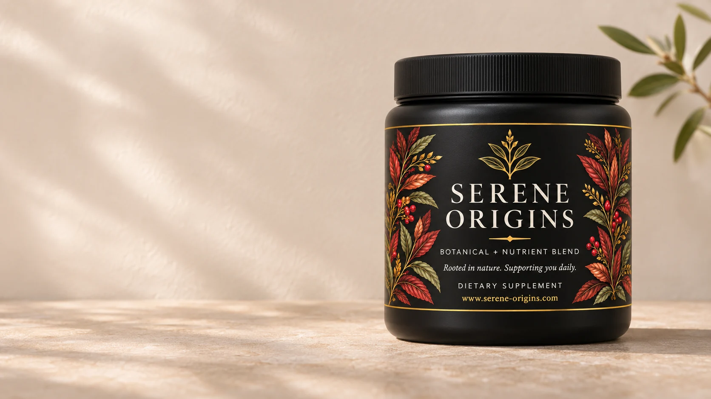
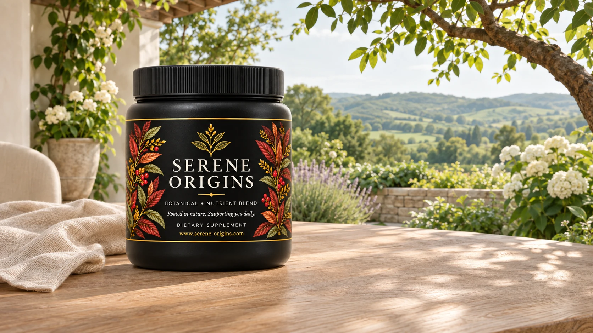

THE INGREDIENT GUIDE
Get to know
what goes in.
From botanicals to essential nutrients. A closer look at the seven ingredients that make up our blend.
Explore every ingredientINFORMATION, WITH INTENTION
A little understanding.
A more considered choice.
Start with what each ingredient is, see the amount in a serving, and follow the sources when you want to learn more. Established nutrient roles, traditional use, and early research are different kinds of information.

HOW IT COMES TOGETHER
Different ingredients.
One place to begin.
The blend brings an amino acid, three extracts, a vitamin, and two minerals into one jar. Each ingredient retains its own identity and clearly listed amount.
Combining ingredients offers a different format for your routine. It does not, by itself, prove that the blend is more effective than the ingredients separately.
Take a closer look at the jarA NOTE ON THE RESEARCH
Curiosity deserves context.
These summaries are educational. Studies may use different preparations, amounts, or populations. They do not establish results for Serene Origins or replace individualized advice. The independent sources linked here do not endorse this product.
Botanical images illustrate ingredient identity. Nutrient images are artistic representations, not photographs of our raw materials or exact molecular structures.